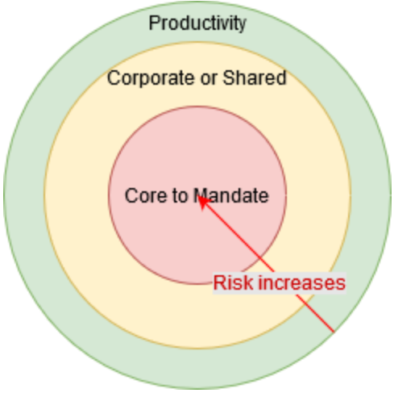

Adopter, acheter et concevoir
Il s’agit d’une stratégie PROVISOIRE.
Table des matières
- Sommaire
- Introduction
- Politique d’orientation
- L’ensemble cohérent de mesures
- Mesurer la réussite de la stratégie
- Annexe A – Analyse de rentabilisation (diagnostic)
- Annexe B – Matrice de traçabilité
- Annexe C – Autres références utiles
- Annexe D – Définitions
- Annexe E – Notes et journal des changements
Sommaire
Pour passer à l’ère numérique, il faut améliorer la réactivité des TI et promouvoir une responsabilité partagée auprès des intervenants d’EDSC sur l’utilisation de la technologie.
Pourtant, le principe qui prévaut actuellement lors de l’acquisition de solutions de TI est le suivant : achetons ce que nous pouvons acheter et créons ce que nous devons créer. Le raisonnement qui sous-tend ce principe fondamental est qu’en achetant une solution de TI auprès d’un tiers, les risques, les responsabilités et les obligations relatifs à l’exécution de ladite solution sont pris en charge par une entreprise qui possède davantage de ressources et d’expertise technique pour produire et entretenir des logiciels.
Ce principe donne lieu à une approche trop simplifiée qui ne tient pas compte du fait qu’en tant que ministère gouvernemental, EDSC est assujetti à de multiples changements rapides, que ce soit aux niveaux juridique, politique, organisationnel ou technologique, qui ont une incidence sur sa capacité de s’acquitter de son mandat. L’acquisition de solutions et de produits de TI peut se faire au moyen de différentes méthodes, et ne représente qu’une infime partie du travail réel requis pour exploiter et entretenir les technologies en question. L’adoption de solutions préexistantes conçues par des tiers – p. ex., un logiciel libre (LL) communautaire ou même un logiciel-service (SaaS) gratuit – est une option qu’on néglige souvent parce qu’on croit que ces solutions n’offrent pas suffisamment de soutien contractuel, de garanties, de mesures d’indemnisation, etc. Toutefois, ces services supplémentaires ne font pas partie de la technologie proprement dite; ce sont des services que les représentants du gouvernement sont devenus habitués à intégrer aux droits d’utilisation du logiciel dans le cadre des processus contractuels. Ces services peuvent également être acquis sous forme de logiciels libres communautaires, au besoin. Mais en combinant tous ces services et accords supplémentaires aux droits d’utilisation d’une technologie logicielle, l’organisation s’engage dans des obligations contractuelles à long terme et dans l’acquisition de technologies et de formats propriétaires, ce qui fait en sorte qu’il peut être très difficile de corriger rapidement le tir si nécessaire.
La souplesse, l’interopérabilité et le couplage libre des solutions de TI sont nécessaires parce que, une fois acquise, la technologie doit être intégrée à l’environnement de TI de l’organisation, configurée en fonction des besoins des utilisateurs d’une manière qui satisfait aux exigences de conformité et de réglementation, et continuellement mise à jour au moyen de correctifs et de nouvelles versions, etc. En plus d’assurer la maintenance de la technologie elle-même, l’organisation qui en fait l’acquisition doit veiller à ce que ses utilisateurs actuels et nouveaux reçoivent une formation continue, à ce que ses processus soient bien adaptés aux nouvelles fonctionnalités et méthodes de travail de la technologie, à avoir accès à un bassin suffisant d’employés compétents et dévoués pour assurer la maintenance de la technologie, et à se conformer aux règlements et aux politiques applicables tout au long du cycle de vie de la solution de TI.
Par conséquent, EDSC doit absolument s’assurer que les solutions de TI complexes ou essentielles à la mission demeurent très souples et adaptables afin de se protéger contre les répercussions des changements futurs tout en minimisant les risques de ces changements, en adoptant des architectures à couplage libre et des blocs de travail de plus petite taille (voir le Modèle de prestation de la solution cible (Anglais) pour connaître les façons proposées d’appuyer une telle approche).
Cette stratégie propose de faire en sorte que tous les intervenants d’EDSC comprennent que les solutions de TI sont complexes et que les décisions d’investissement doivent être prises en tenant compte de la souplesse, de l’interchangeabilité et de l’interopérabilité tout au long du cycle de vie d’une solution de TI, et non seulement à l’étape initiale.
Cette stratégie complémente les initiatives de TI existantes en introduisant une politique d’orientation visant à établir une direction et vient appuyer ces initiatives au moyen d’un plan en neuf étapes auxquelles participent des intervenants de la DGIIT, de la DGPSS (BDPD), de la DGDPF, de SPC, du SCT et de SPAC (voir l’ensemble cohérent de mesures).
L’objectif de cette stratégie est de clarifier l’application des procédures obligatoires du GC sur les évaluations de l’architecture d’entreprise et les interfaces de programmation d’applications lors de l’acquisition de nouvelles solutions de TI ou de leur amélioration dans le contexte de la DGIIT d’EDSC.
Plus de détails à l’annexe A.
Introduction
Objet
Fournir à la Direction générale de l’innovation, de l’information et de la technologie (DGIIT) une stratégie globale pour l’application des Procédures obligatoires du gouvernement du Canada (GC) sur les évaluations de l’architecture d’entreprise et des Procédures obligatoires sur les interfaces de programmation d’applications, dans le contexte de l’acquisition de nouvelles solutions de technologie de l’information (TI) et de l’évaluation des améliorations apportées aux solutions de TI existantes.
Cette stratégie comprend :
- Une politique d’orientation qui sert à orienter EDSC dans l’application des procédures obligatoires du GC sur les évaluations de l’architecture d’entreprise et les interfaces de programmation d’applications lors de l’acquisition ou de l’amélioration des solutions de TI existantes à Emploi et Développement social Canada (EDSC).
- Un ensemble cohérent de mesures (un plan d’action) servant à opérationnaliser la politique d’orientation.
Cette stratégie vise à communiquer la décision du dirigeant principal de l’information (DPI) d’EDSC (qui n’a pas encore été approuvée) concernant la voie à suivre (la Politique d’orientation) et les investissements nécessaires pour opérationnaliser cette décision (ensemble cohérent de mesures).
Intervenants ciblés
Ce document stratégique s’adresse aux intervenants qui participent à l’acquisition d’une solution de TI pour aider à concrétiser les résultats d’une initiative axée sur les TI telle que définie dans l’analyse de rentabilisation d’un projet ou d’un programme. Plus précisément, les intervenants participant à l’architecture des solutions de TI, à la définition des normes technologiques, à l’élaboration, à la prestation, à l’opérationnalisation et à la tenue à jour des solutions de TI (comme l’architecture d’entreprise, les opérations d’entreprise, etc.), de même qu’aux comités directeurs comme le Comité d’examen de l’architecture (CEA) et le Conseil d’examen de l’architecture intégrée (CEAI). Cela comprend les intervenants qui font ou non partie de la DGIIT, y compris, sans toutefois s’y limiter, les fonctions opérationnelles, la Direction générale des politiques stratégiques et de service (DGPSS), le dirigeant principal des données (DPD), la Direction générale des services d’intégrité (DGSI), la Direction générale des services de vérification interne (DGSVI) et Services partagés Canada (SPC). Vous trouverez dans l’ensemble cohérent de mesures une liste des intervenants qui devraient participer à l’étape de l’exécution de cette stratégie en vue de la mise en œuvre de la politique d’orientation.
Une fois qu’elle aura été mise en œuvre, la politique d’orientation ciblera les intervenants concernés lorsque le besoin d’une solution de TI sera soulevé, ainsi que lors de la conception, l’établissement de l’architecture, l’élaboration, la mise en œuvre, l’opérationnalisation et la mise à jour de la solution de TI. Tout le personnel d’EDSC qui participe à l’exploration des solutions de TI et aux décisions d’investissement en matière de TI doit se conformer à la présente politique.
Politique d’orientation
La politique suivante reflète la décision adoptée par le DPI d’EDSC (approbation de principe par le DPI; la décision doit maintenant être approuvée par le CEAI) au moment d’évaluer la façon la plus appropriée d’acquérir une solution de TI, que ce soit en l’adoptant, en l’achetant ou en la concevant. Chaque énoncé de politique représente une déclaration de cette décision et a reçu l’approbation de son secteur de gouvernance connexe (les approbations n’ont pas encore été obtenues, voir l’ensemble cohérent de mesures).
Cette politique s’applique lorsqu’une initiative d’EDSC exige l’acquisition d’une solution de TI, qu’elle soit offerte par EDSC ou par un fournisseur tiers. Une fois l’initiative lancée, toutes les équipes participant au projet et les produits de TI faisant partie de la solution de TI doivent se conformer à cette politique d’orientation.
La présente politique d’orientation a été préparée en tenant compte de l’harmonisation et de la conformité aux instruments de politique existants et ne vise pas à les remplacer. Les intervenants doivent continuer de se conformer aux instruments de politique existants, notamment :
- les Normes numériques
- Secrétariat du Conseil du Trésor (SCT)
- la Directive sur les services et le numérique du Secrétariat du Conseil du Trésor (SCT); et, en particulier :
- la Directive sur la gestion de la sécurité du SCT
- les Normes relatives aux principes d’architecture du GC
- Emploi et Développement social Canada (EDSC)
- la Politique sur la gestion des projets et des programmes (PGPP) d’EDSC
- la Politique de gestion de l’information d’EDSC (en cours de rédaction)
- les Politiques d’approvisionnement d’EDSC
- la Politique de sécurité d’EDSC (en cours de rédaction)
- la stratégie du Modèle de prestation de la solution cible d’EDSC (ébauche en cours de consultation)
- Stratégie de données d’EDSC
Gouvernance, conformité et rapports
- Les solutions de TI sont divisées en parties gérables (produits de TI), conformément au modèle des capacités opérationnelles d’EDSC ou au modèle des capacités opérationnelles du GC, selon le plus pertinent.
- Les solutions de TI sont évaluées par rapport au cadre d’évaluation des risques liés aux solutions de TI (à créer – voir l’ensemble cohérent de mesures et lire la rubrique Gestion des risques liés à l’acquisition de logiciels).
- La maintenance et le soutien des produits et des solutions de TI peuvent être effectués à l’interne ou confiés à un fournisseur tiers.
- Les activités de maintenance et de soutien imparties à l’externe peuvent être exécutées par un tiers autre que celui qui fournit la licence du logiciel.
Finances
- Les exigences financières des solutions de TI sont harmonisées au cadre de gestion des produits (à créer – voir l’ensemble cohérent de mesures).
- Les solutions de TI sont évaluées par rapport au cadre du coût total de possession (à créer – voir l’ensemble cohérent de mesures).
Juridique
- Les solutions de TI s’appuient sur le Guide des termes juridiques relatifs aux logiciels d’EDSC (à créer – voir l’ensemble cohérent de mesures)
- Les solutions et les produits de TI sont conformes au Cadre de gestion des logiciels libres d’EDSC, le cas échéant.
Architecture
- Les limites de couplage libre des solutions de TI et des produits de TI sont à l’intersection de la chaîne de valeur, du stade de valeur et de la capacité opérationnelle (modèle de capacité opérationnelle d’EDSC).
- Le dédoublement des solutions de TI ou des produits de TI est pris en charge à condition que ce soit pour différentes capacités opérationnelles.
- Les limites des solutions de TI et des produits de TI doivent s’appliquer aux fonctionnalités d’application, en vue d’accroître les capacités opérationnelles.
- L’adoption de solutions et de produits de TI existants, internes ou externes, est privilégiée par rapport à l’achat ou à la conception intégrale de nouvelles solutions, selon les profils de risque particuliers et les coûts totaux de possession.
- Les solutions de TI et les produits de TI font l’objet d’une évaluation des risques de verrouillage technologique au moyen de leurs cadres d’évaluation des risques respectifs (à créer – voir l’ensemble cohérent de mesures)
L’ensemble cohérent de mesures
| Catégorie de politique | Mesure | Description | Lead | Parties prenantes |
|---|---|---|---|---|
| Gouvernance | Produire la définition normalisée du CEAI pour les solutions de TI | Définir le concept et la portée de la solution de TI aux fins d’utilisation et d’évaluation par le CEAI et les équipes de la DGIIT. |
Équipes d'architecture
(Incluant : Entreprise, Opérations, Données, Information, Application/Solution, Technique, Sécurité des TI et Architecture de sécurité et Équipe de l’infonuagique) |
|
| Gouvernance | Produire un cadre d’évaluation des risques liés aux solutions de TI |
Produire un cadre d’évaluation des risques liés aux solutions de TI qui favorise et encourage l’utilisation de solutions de TI souples et interopérables, une architecture axée sur les services et des produits de TI réutilisables comme composantes. Cela est nécessaire pour aider l’organisation à s’adapter à un rythme rapide continu à divers niveaux, notamment sur les plans politique, juridique, organisationnel, technologique, social et de la géolocalisation, pour ne nommer que ceux-là.
Le cadre devrait également accroître le niveau de solutions de TI qui s’appuient sur des normes ouvertes plutôt que des normes propriétaires, et inclure deux aspects essentiels : - 1) Faire les bonnes choses – offrir une valeur et contribuer à la réalisation des résultats ministériels et du GC - 2) Faire les choses de la bonne façon – s’harmoniser avec les normes opérationnelles et informatiques, les balises, etc. Le modèle de capacités opérationnelles d’EDSC devrait être utilisé pour aider à définir les limites du concept des solutions de TI. Le cadre d’évaluation des risques liés aux solutions de TI devrait également tenir compte des opérations de TI internes comme étant l’une des dimensions essentielles à considérer pour évaluer les risques pour l’organisation. |
Équipes d'architecture
(Incluant : Entreprise, Opérations, Données, Information, Application/Solution, Technique, Sécurité des TI et Architecture de sécurité et Équipe de l’infonuagique) |
|
| Gouvernance | Produire un cadre d’évaluation des risques liés aux produits de TI |
Produire un cadre d’évaluation des risques liés aux produits de TI qui favorise et encourage le respect des normes architecturales du GC.
Le modèle de capacités opérationnelles d’EDSC devrait être utilisé pour aider à définir les limites du concept des solutions de TI.
Principaux critères des produits de TI qu’il faut garder à l’esprit : Favorise : souplesse, interchangeabilité, interopérabilité, réutilisabilité, adaptabilité et prise en charge du libre-service au profit d’autres équipes (fondé sur l’IPA) Réduit : situations de verrouillage – contractuelles ou technologiques –, entretien, personnalisation, etc. Le cadre devrait également accroître le niveau de produits de TI qui s’appuient sur des normes ouvertes plutôt que des normes exclusives, et inclure deux aspects essentiels : - 1) Faire les bonnes choses – offrir une valeur et contribuer à la réalisation des résultats ministériels et du GC - 2) Faire les choses de la bonne façon – s’harmoniser avec les normes opérationnelles et informatiques, les balises, etc. Le cadre d’évaluation des risques liés aux produits de TI devrait également tenir compte des opérations de TI internes comme étant l’une des dimensions essentielles à considérer pour évaluer les risques pour l’organisation. |
Équipes d'architecture
(Incluant : Entreprise, Opérations, Données, Information, Application/Solution, Technique, Sécurité des TI et Architecture de sécurité et Équipe de l’infonuagique) |
|
| Gouvernance | Examiner la structure de gouvernance et les mandats de la DGIIT |
Examiner la structure de gouvernance actuelle de la DGIIT et le mandat des comités afin de cerner les lacunes et les conflits potentiels avec les résultats souhaités de cette stratégie.
Modifier ensuite la structure de gouvernance et les mandats des comités pour qu’ils correspondent aux résultats souhaités. Remarque : cette mesure dépend de la réalisation de la mesure « Produire un cadre de gestion des produits de TI », qui sera élaboré sous la direction de l’équipe des Finances de la DGIIT. Remarque : cette mesure dépend de la réalisation de la mesure « Produire un Guide des termes juridiques relatifs aux logiciels d’EDSC », qui sera élaborée sous la direction de l’équipe des Services juridiques. |
Équipes d'architecture
(Incluant : Entreprise, Opérations, Données, Information, Application/Solution, Technique, Sécurité des TI et Architecture de sécurité et Équipe de l’infonuagique) |
|
| Gouvernance | Faire approuver le cadre de logiciel libre (LL) d’EDSC par le CEAI d’EDSC |
Faire approuver le cadre de logiciel libre (LL) d’EDSC par le CEAI d’EDSC
Présentation déjà faite au CEA et approbation obtenue. Passer à l’approbation finale de la gouvernance. |
Architecture Technologique |
|
| Gouvernance | Produire un cadre de gestion des produits de TI |
Produire un cadre de gestion des produits de TI qui fournit des conseils sur la gestion opérationnelle par rapport à la gestion financière des dépenses en immobilisations, afin d'encourager ce modèle de gestion dans les initiatives dirigées par EDSC. Tirer parti du modèle d’affichage des coûts du CE de l’infonuagique pour expliquer l’utilisation des services dans le cadre d’une solution de TI et l’établissement des coûts des produits de TI par rapport à la budgétisation des projets. |
Finances de la DGIIT |
|
| Finance | Produire un cadre de coût total de possession | Produire un cadre de coût total de possession pour fournir des conseils sur l’évaluation des coûts du cycle de vie complet de l’adoption de solutions de TI (acquisition, exploitation et fin de vie) |
Équipes d'architecture
(Incluant : Entreprise, Opérations, Données, Information, Application/Solution, Technique, Sécurité des TI et Architecture de sécurité et Équipe de l’infonuagique) |
|
| Légal | Produire un Guide des termes juridiques relatifs aux logiciels d’EDSC | Produire un Guide des termes juridiques relatifs aux logiciels d’EDSC pour appuyer l’adoption de LL, aider à gérer les complexités juridiques des abonnements dans l'infonuagique et aider les équipes à évaluer les risques et les responsabilités partagés. | Services Légaux |
|
| Architectural | Harmoniser le cadre d’évaluation de l’infonuagique (CEI) avec la stratégie actuelle | Le CEI devra s’appuyer au préalable sur des évaluations des risques liés aux solutions de TI et aux produits de TI avant de procéder à l’évaluation de la pertinence de l'infonuagique. | Centre d’expertise (CE) de l’infonuagique |
|
Mesurer la réussite de la stratégie
La réussite de cette stratégie sera mesurée en comparant les données suivantes aux éléments clés des procédures obligatoires du GC sur les évaluations de l’architecture d’entreprise et les interfaces de programmation d’applications.
Favoriser la souplesse organisationnelle (EDSC)
- Toutes les nouvelles solutions et tous les nouveaux produits de TI complexes ou essentiels au mandat ont été acquis dans des conditions qui permettent à EDSC de corriger le tir et d’effectuer des changements au besoin (c.‑à‑d. qu’il n’y a pas d’ententes de service, de clauses contractuelles ou de propriété intellectuelle, ou de contraintes techniques qui empêchent EDSC de modifier en tout ou en partie les solutions et les produits de TI.)
Accélérer l’acquisition de solutions et de produits TI (LL, XaaS, etc.)
- Le temps requis pour identifier, évaluer, tester, certifier et approuver un nouveau produit de TI externe qui sera utilisé à EDSC est inférieur à 5 jours ouvrables.
- Il faut moins de 30 minutes pour fournir un produit de TI autonome ou l’accès à un logiciel-service qui figure déjà dans la GPA.
- Le délai de déploiement des changements de code pour une solution de TI, de l’étape de la vérification jusqu’à celle de la mise en production, est inférieur à 2 jours ouvrables.
Accroître la réutilisation des solutions et produits de TI existants, internes et externes
- Ratio accru de solutions et de produits logiciels libres utilisés en production par rapport à ceux achetés ou développés à l’interne qui ne sont pas partageables et réutilisables.
- Les développeurs et les propriétaires de produits d’EDSC contribuent aux projets de LL de tiers au lieu d’effectuer les changements à l’interne.
- Les développeurs d’EDSC ne créent de nouvelles fourches de LL de tiers que si les changements proposés ne sont pas intégrés à la version en amont.
- Au moment de développer un logiciel :
- Toutes les dépendances sont automatiquement analysées, documentées et prises en compte.
- Une nomenclature est générée automatiquement.
- Les politiques de conformité de licence sont appliquées automatiquement.
Créer des solutions conçues pour le nuage
- Toutes les nouvelles solutions et tous les nouveaux produits de TI peuvent techniquement être déployés sur les lieux ou auprès d’un fournisseur de services infonuagiques préapprouvé.
Architecture à couplage libre
- Tous les nouveaux produits et nouvelles solutions de TI favorisent la réutilisation de leurs capacités opérationnelles en tant que service au moyen d’IPAs.
- Toutes les améliorations apportées aux solutions de TI existantes comprennent comme produit livrable une IPA adaptée à ses fonctionnalités.
Création
- Ratio accru de projets créés à l’interne et publiés comme LL.
Applicable à tous les scénarios
- Ratio accru de solutions et de produits de TI découplés par rapport à la base de référence.
- Nombre accru d’IPAs trouvables et accessibles aux fins de réutilisation dans l’ensemble des solutions et des produits de TI d’EDSC.
- Augmentation du nombre de solutions et de produits de TI transférés et exploités dans des environnements infonuagiques (stratégie infonuagique privilégiée).
- Rapidité et souplesse accrues pour les changements logiciels déployés en production reliées aux solutions et produits de TI (voir le modèle de prestation de la solution cible).
Annexe A – Analyse de rentabilisation (diagnostic)
Concevoir ou acheter : Une question trop simplifiée
La création de ce document stratégique découle d’une demande visant à aider la DGIIT à décider si elle devrait prioriser l’achat d’une solution de TI plutôt que la conception d’une solution.
La recherche d’une réponse et d’une approche par défaut à la question « Devrait-on concevoir ou acheter une solution de TI? » au niveau organisationnel est un raccourci mental qui contourne les procédures obligatoires du gouvernement du Canada sur les évaluations de l’architecture d’entreprise et les interfaces de programmation d’applications, ainsi que les concepts de l’architecture de solution, dans le cadre duquel les experts pertinents de l’organisation, tant des secteurs d’activité, des finances, de la sécurité, de la technologie de l’information, etc., collaborent à la conception d’une solution tout en tirant parti de diverses ressources, notamment du personnel, des outils, des processus et des règles.
Une solution de TI est, par défaut, créée, que ce soit par une seule personne, par plusieurs équipes ou par un tiers, et elle consiste le plus souvent en un assemblage de nombreux composants, appelés produits de TI dans le présent document.
Le modèle ci-dessous présente ces liens de manière visuelle.
!Un diagramme UML représentant la relation hiérarchique d’une solution informatique et de ses composants. Le diagramme comporte 5 rectangles reliés par des lignes de relation. Le premier rectangle à gauche est intitulé “Solution de TI”. Il est relié à un deuxième rectangle, intitulé “Produit de TI”, situé à sa droite par une ligne de relation; l’extrémité de la ligne partant du rectangle “Solution de TI” comporte un “1” et l’autre extrémité comporte “1…” et un petit losange blanc. Le rectangle “Produit de TI” est relié à un troisième rectangle, intitulé “Logiciel”, situé à sa droite par une ligne de relation; l’extrémité de la ligne partant du rectangle “Produit de TI” porte un “1” et l’autre extrémité porte un “1…” et un petit losange blanc. Le rectangle “Logiciel” a deux relations de connexion. Le premier lien concerne un rectangle intitulé “Configuration”, situé sous le rectangle “Logiciel”; l’extrémité de la ligne partant du rectangle “Logiciel” comporte un “1” et l’autre extrémité un “1…” et un petit losange noir. La deuxième connexion concerne un autre rectangle, intitulé “Infrastructure”, situé à droite du rectangle “Logiciel”; l’extrémité de la ligne partant du rectangle “Logiciel” comporte un “1” et l’autre extrémité un “1…” et un petit losange blanc. Une dernière connexion relie les rectangles “Infrastructure” et “Configuration” ; l’extrémité de la ligne partant du rectangle “Infrastructure” comporte un “1” et l’autre extrémité un “1…*” et un petit losange noir.](assets/images/strategy-build-buy-uml-it-solution.png)
Description du modèle :
- Une solution de TI comprend un ou plusieurs composants de TI
- Un composant de TI comprend un ou plusieurs logiciels qui peuvent être soit un logiciel libre, un abonnement à un service, un logiciel commercial de tiers ou un logiciel conçu sur mesure.
- Un logiciel est déployé sur une infrastructure qui peut être sur les lieux (centres de données de SPC), chez un fournisseur public de services infonuagiques (modèle IaaS, PaaS ou SaaS) ou une version hybride combinant à la fois un fournisseur de services infonuagiques sur les lieux et un public.
Ainsi, les questions à poser ressemblent davantage à :
- « Quels composants logiciels sont requis pour obtenir une fonctionnalité donnée? »
- « Pour chacun de ces composants, le meilleur plan d’action consiste-t-il à adopter un composant libre, à acheter les droits d’utilisation d’un produit ou d’un service commercial ou à créer le composant à l’interne? »
- « Quelle proportion de risques l’organisation est-elle disposée à déléguer à un produit ou un service tiers (p. ex., lorsque la feuille de route du produit ou du service ne relève pas du contrôle de l’organisation?) ».
Dans les solutions de grande envergure et complexes, ces questions doivent être posées non seulement au niveau de la solution, mais également pour chaque composant de la solution, en tenant compte de facteurs et de critères multiples qui seront examinés ci-dessous.
Même lorsqu’on dit qu’une solution de TI a été achetée, elle n’est jamais immédiatement prête à l’emploi, qu’il s’agisse d’un logiciel commercial ou d’un logiciel-service (SaaS). Les équipes de TI de l’organisation doivent acquérir, configurer et adapter les produits de TI achetés en fonction du reste de l’infrastructure, des services et des règles en matière de TI de l’organisation.
La maintenance des solutions de TI devrait donc être traitée séparément de la solution acquise, car elle peut nécessiter l’intervention du personnel interne ainsi que la participation du personnel de tiers, qu’il s’agisse d’un fournisseur ou d’une collectivité dans le cas d’un logiciel libre.
Facteurs contextuels
Il est important de tenir compte de divers facteurs contextuels au moment de prendre des décisions, par exemple :
- L’organisation possède-t-elle les compétences et la capacité nécessaires pour concevoir, créer, construire et exploiter cette solution?
- Pour une option donnée, quels seront les profils de ressources requis? Par exemple, le développement interne nécessitera une solide capacité en matière de développement et de gestion de projet, tandis que l’achat reposera davantage sur l’approvisionnement, les services juridiques et la gestion des fournisseurs. Une option par rapport à l’autre n’équivaut pas nécessairement à une augmentation ou à une réduction du personnel; parfois, il s’agit simplement d’un échange de compétences internes.
- Comment la décision peut-elle s’harmoniser avec les stratégies opérationnelles de l’organisation? Par exemple, l’orientation consiste-t-elle à accroître davantage la capacité interne ou à externaliser certaines nouvelles initiatives à des intégrateurs tiers? Le délai d’exécution de la solution est-il un facteur important?
Toutefois, cela ne signifie pas que les questions de la section précédente ne devraient pas être posées ultérieurement. Il est possible que l’organisation ne possède pas de personnel ayant les compétences requises ou la capacité suffisante pour mettre en œuvre la solution de TI à l’interne à un moment donné. Dans ce cas, des efforts appropriés d’acquisition et de maintien en poste des talents, ainsi que de formation, sont nécessaires.
Le fait de tirer avantage de ressources externes représente une option valable, pourvu que l’organisation s’assure de planifier la capacité interne et la formation. De plus, toute solution conçue, élaborée et livrée par un tiers doit toujours respecter les mêmes principes que ceux qui sont requis pour les solutions élaborées au sein d’EDSC, de sorte qu’une fois la mise en service terminée, l’organisation conserve un niveau élevé de contrôle et de souplesse pour veiller au maintien et à l’amélioration de la solution, tout en limitant les possibilités de verrouillages.
Par conséquent, si l’organisation n’est pas en mesure de concevoir, de créer et d’exploiter la solution elle-même, le tiers qui met la solution en place au nom d’EDSC devrait recevoir la consigne claire d’harmoniser sa solution en fonction de nos propres principes architecturaux.
Autres considérations
- Quel est le niveau de contrôle préférable quant à la fréquence des mises à niveau ou à l’obsolescence technologique d’une option?
- Les composants d’une option donnée respectent-ils les normes technologiques de l’organisation?
- Quel est le niveau de maturité recherché pour un composant donné?
Gestion des risques liés à l’acquisition de logiciels
La stratégie porte sur la gestion des risques liés à l’acquisition de logiciels plutôt que sur l’application de règles dogmatiques pour l’achat ou la création de logiciels (p. ex., « SaaS d’abord » ne signifie pas que l’on doit toujours opter pour un SaaS, « Achetons ce que nous pouvons acheter » ne signifie pas que nous devons acheter puisque le produit est disponible). La stratégie utilisera plutôt les outils politiques comme prévus par l’auteur de la politique et son pouvoir d’éclairer les décisions relatives à la viabilité à long terme et aux besoins des utilisateurs.
La gestion des risques liés à l’acquisition de logiciels repose sur la formule suivante :
Risque = Probabilité de changement * incidence
Où
Le risque est le niveau de préjudice pour EDSC (élevé, moyen ou faible).
La probabilité de changement est la probabilité qu’un changement survienne dans le futur (p. ex., besoin d’une nouvelle fonctionnalité, nouvelle législation, modification des processus ou des règles, mise à niveau de la version, personnalisation, intégration, discontinuité du produit du fournisseur, modification de la feuille de route du produit du fournisseur, etc.).
L’incidence est l’incidence que le changement aura sur EDSC, en tenant compte des éléments suivants :
- Perte financière
- Perte de réputation
- Perte de temps (réactivité)
- Conséquences juridiques

Un autre lien pourrait être établi pour évaluer le risque par rapport à la probabilité de changement : la complexité d’une solution. Autrement dit, moins les besoins sont statiques, plus les chances sont élevées que des changements non comptabilisés deviennent des exigences à l’avenir, ce qui augmente les risques pour l’organisation. Les grands projets de TI sont souvent assujettis à des changements au niveau des exigences, comme des modifications de la législation et des exigences inconnues au début du projet. En plus de la complexité des systèmes eux-mêmes, cela signifie que les grands projets présentent un risque plus élevé pour l’organisation de ne pas être en mesure de s’acquitter de son mandat.
En fonction du niveau de risque, EDSC ajustera ses décisions concernant l’acquisition de logiciels et de services (conception, achat ou adoption) ainsi que la façon de gérer la maintenance de ces solutions de TI.
Les niveaux de risque sont fortement influencés par la capacité introduite par les logiciels. Le diagramme suivant permet de visualiser comment ce niveau de risque varie selon le type de capacités :

Les capacités de productivité, comme les outils de collaboration, l’édition d’image et le traitement de texte, présentent de faibles risques pour EDSC en raison de leur caractère commun sur le marché, leur faible probabilité de changement et leur présence dans le périmètre du mandat de base d’EDSC, ce qui réduit leur incidence sur l’organisation.
Les capacités ministérielles ou partagées, comme les systèmes financiers, les systèmes de RH, le bus de messagerie, les systèmes de gestion de l’information et les systèmes d’authentification, commencent à accroître les risques pour EDSC en raison de leur empreinte plus importante au sein de l’organisation, de leurs exigences d’intégration plus importantes et de leurs répercussions financières et temporelles plus importantes sur les utilisateurs finaux et les contribuables.
Les capacités de base, comme l’assurance-emploi, les pensions et la sécurité de la vieillesse, sont ce qui distingue EDSC de la grande majorité des institutions dans le monde. Les options de logiciels dans ce créneau sont rares en raison du mandat unique d’EDSC et même si des services commerciaux étaient offerts, la nature marchandisée de ces solutions signifie qu’EDSC a une influence limitée sur la version en amont du logiciel, ce qui augmente les risques pour l’organisation de se verrouiller avec une solution et un fournisseur uniques. La probabilité de changement est élevée puisque ces capacités changent autant que la réglementation. Les répercussions de ces changements ont un effet d’entraînement sur l’ensemble de l’organisation et affectent la réputation d’EDSC de répondre aux demandes des citoyens tout en maintenant sa responsabilité fiduciaire.
En outre, d’autres types de risques doivent être pris en compte, par exemple reliés à la :
- Mise en œuvre – Retards imprévus, immaturité technologique, résistance des utilisateurs à l’adoption du nouveau système, etc.
- Propriété intellectuelle – Conformité aux exigences en matière de licences, incapacité de prendre des décisions commerciales ou technologiques particulières en raison de contraintes liées aux licences, etc.
- Viabilité des tiers – Tiers qui cesse ses activités, changement au niveau de l’orientation de la feuille de route après la venue d’un nouveau propriétaire, etc.
Évaluation du coût total de possession
Une évaluation du coût total estimatif de possession des options pertinentes possibles devrait être effectuée pour orienter la prise de décisions en matière d’acquisition. Il est nécessaire de quantifier et de comparer les coûts; cela permet de cerner, d’évaluer et de remettre en question les hypothèses et les préjugés.
Voici quelques éléments de coût qui devraient être pris en considération :
Acquisition
- Évaluation initiale
- Décision et négociation
- Licences
- Infrastructure (virtuelle ou physique)
- Personnalisation, intégration et développement
- Migration (données et utilisateurs)
- Formation
Exploitation
- Utilisation
- Entretien (p. ex., service d’assistance, ingénierie de service et de logiciel, relations avec les fournisseurs)
- Mises à niveau
- Services de soutien
- Infrastructure
- Mise à l’échelle
- Personnalisation, intégration et développement
- Dépréciation
Fin de vie
- Enlèvement
- Migration (données et utilisateurs)
Autre
- Occasion ou conformité (p. ex., rater une occasion sur le marché, ne pas se conformer à la réglementation, diminution de la satisfaction de la clientèle)
- Coûts engagés auprès d’un tiers pour assurer la capacité de rencontrer les ententes de niveau de service (ENS)
- Imprévus (p. ex., dépenses imprévues découlant de la vérification de la conformité et de l’octroi insuffisant de licences)
Il peut s’avérer impossible de calculer les montants exacts pour tous ces éléments; la tenue d’une évaluation selon une échelle de type « Coûts élevés/moyens/faibles » pourrait être plus réaliste. Cela ne devrait pas poser de problème tant que les mêmes critères sont utilisés pour évaluer toutes les options d’une acquisition.
Toutefois, n’oubliez pas que l’optimisation des ressources ne tient pas uniquement compte du coût financier d’une solution. L’option la moins dispendieuse n’est pas toujours la meilleure.
Conclusion
À l’exception des logiciels bien établis pour les besoins génériques ou périphériques du ministère, il y a peu de distinction entre la conception et l’achat. La question est de savoir si l’organisation peut et doit concevoir le logiciel elle-même, ou s’il est préférable qu’elle demande à quelqu’un d’autre de le faire. Même les services traditionnels offerts sous forme de SaaS (comme les services de courriel) nécessitent des efforts de configuration (conception) considérables pour leur mise en œuvre1 et leur maintenance continue. Cette stratégie vise à remettre entre les mains du ministère le contrôle de la mise en œuvre des services, ce qui permettra une harmonisation accrue avec l’orientation du gouvernement du Canada et d’accroître la qualité et le taux de prestation des services numériques aux Canadiens. L’objectif est de remplacer les approches désuètes en matière de prestation de solutions de TI par des pratiques conformes aux pratiques exemplaires de l’industrie, afin de promouvoir la transformation numérique du ministère et de répondre aux attentes croissantes des citoyens canadiens en matière de services numériques.
Annexe B – Matrice de traçabilité
La matrice de traçabilité suivante est utilisée pour démontrer l’harmonisation avec divers plans, stratégies et instruments de politique déjà en cours.
| Élément de la stratégie | Qui s’harmonise avec |
|---|---|
| La gouvernance, la conformité et la production de rapport |
Normes numériques du GC/Conception avec les utilisateurs Normes numériques du GC/Itération et amélioration fréquentes Normes d’architecture du GC/Architecture opérationnelle Normes d’architecture du GC/Architecture de sécurité et protection des renseignements personnels PSON du GC/Chapitre 1 (Un gouvernement orienté vers les services et centré sur l’utilisateur) GPSON du GC/Chapitre 6 (Gouvernance numérique) Politique sur les services et le numérique du CT/4.2 (Conception et prestation de services axés sur les clients) Directive sur les services et le numérique du CT/Gestion stratégique de la TI Voie à suivre pour la DGIIT/1. Ajuster le leadership de la DGIIT Voie à suivre pour la DGIIT/6 a. Renforcer la stratégie GI-TI Voie à suivre pour la DGIIT/6f. Officialiser le cadre de gestion des exigences Plan de TI/Section II/Fondements Modèle ministériel de chaîne de valeur Modèle ministériel de capacité opérationnelle Modèle ministériel de capacité en matière d’applications Principes architecturaux de l’AE d’EDSC Normes technologiques d’EDSC (aussi appelées « briques techniques ») |
| Finance |
Normes numériques du GC/Itération et amélioration fréquentes POP du GC/Chapitre 4.3 Modernisation de l’approvisionnement Politique sur les services et le numérique du CT/4.2 Service axé sur le client Politique sur les services et le numérique du CT/Soutenir la capacité et les compétences de l’effectif Voie à suivre pour la DGIIT/6d. Programme/projet distinct Voie à suivre pour la DGIIT/8. Stratégie sur la dette technique |
| Architecture |
Schéma stratégique/Architecture Lean Normes numériques du GC/Itération et amélioration fréquentes Normes d’architecture du GC/Architecture d’information Normes d’architecture du GC/Architecture des applications Normes d’architecture du GC/Architecture de sécurité et protection des renseignements personnels PSON du GC/Chapitre 3.2 Connectivité universelle PSON du GC/Chapitre 4.3 Modernisation de l’approvisionnement PSON du GC/Chapitre 4.4 Modernisation de la TI Voie à suivre pour la DGIIT/6 a. Renforcer la pratique de l’architecture d’entreprise Voie à suivre pour la DGIIT/6e. Améliorer le développement d'applications |
| Gestion de produit |
Carte de stratégies/Interfonctionnel Carte de stratégies/Amélioration continue Normes numériques du GC/Itération et amélioration fréquentes Normes numériques du GC/Gérer les risques en matière de sécurité et de protection des renseignements personnels Normes numériques du GC/Intégrer l’accessibilité dès le départ Normes d’architecture du GC/Architecture opérationnelle Normes d’architecture du GC/Architecture de sécurité et protection des renseignements personnels PSON du GC/Chapitre 2.3 Accessibilité et inclusion Politique sur les services et le numérique du CT/Soutenir la capacité et les compétences de l’effectif Voie à suivre pour la DGIIT/6d. Programme/projet distinct Voie à suivre pour la DGIIT/6e. Améliorer le développement d’applications |
Annexe C – Autres références utiles
Annexe D – Définitions
- Solution de TI
- Une solution de TI est la combinaison d’un ou de plusieurs produits de TI, qui sont à leur tour composés d’un ou de plusieurs composants logiciels et/ou matériels, acquis de diverses façons : conçus à l’interne, acquis comme logiciel libre, fournis par une entreprise comme application exécutable en vertu d’une licence propriétaire, comme dispositif autonome ou utilisé comme service par le biais d’un modèle d’abonnement. (Voir la définition normalisée de la DGIIT ci-après.)
- Produits de TI
- Combinaison de logiciel, d’infrastructure et de leur configuration. Un produit de TI s’apparente à une « application » telle que définie par le programme de Gestion du portefeuille d’applications (GPA). Un produit de TI peut comporter un ou plusieurs logiciels (p. ex., logiciels commerciaux, bibliothèques libres, logiciels libres, logiciels conçus sur mesure). Chacun de ces logiciels est déployé dans une ou plusieurs infrastructures (sur place, dans l’infonuagique publique ou une combinaison des deux – ce qu’on appelle déploiement hybride). Dans le cadre de la présente stratégie, les systèmes d’exploitation ne sont PAS définis comme des produits de TI. Par conséquent, si un produit de TI nécessite un système d’exploitation donné pour fonctionner, il est conforme à la présente politique.
- Adoption
- Processus par lequel le ministère acquiert un produit de TI qui disponible au public et a été utilisé au moins une fois à l’extérieur de l’organisation. Il peut s’agir de logiciels libres, de logiciels propriétaires et de XaaS, utilisés tels quels, sans modification du code. (cette définition s’inspire de la FAQ sur les LL du ministère américain de la Défense, dans laquelle les logiciels libres sont définis comme étant des logiciels commerciaux).
- Conception
- Processus par lequel le ministère produit ou confie à un tiers la production d’un code personnalisé qui ne fait pas partie d’un produit de TI existant, disponible et utilisé à l’extérieur de l’organisation. Au moment de la conclusion, les modalités du contrat peuvent varier et avoir une incidence sur la capacité du ministère de modifier le code dans le futur.
- Achat
- Processus par lequel le ministère échange des fonds pour faire l’acquisition d’un ou plusieurs des éléments suivants :
-
- Droits d’utilisation d’un produit de TI selon certaines modalités
-
- Fonctionnalités supplémentaires non offertes par défaut dans les produits de TI
-
- Services, y compris, sans s’y limiter : infrastructure-service, plateforme-service, logiciel-service, correctifs de sécurité, améliorations des fonctionnalités, formation, intégration de produits de TI, conseils professionnels, etc.
-
- Garanties et obligations
- Solutions de TI complexes
- Une solution de TI est complexe lorsque les exigences ne sont pas toutes connues ou que les éléments clés ne peuvent être déterminés que plus tard, par voie d’expérimentation et de recherche auprès des utilisateurs.
- Logiciels libres
- Logiciel dont le code source est rendu disponible avec une licence dans laquelle le titulaire du droit d’auteur donne les droits d’étudier, de modifier et de distribuer le logiciel à n’importe qui et à n’importe quelle fin. Il s’agit du terme utilisé par l’Open Source Initiative (OSI). La définition du logiciel libre s’appuie sur dix critères.
- Normes ouvertes
- Les normes ouvertes sont un ensemble de règles conçues pour faire un travail spécifique dans le domaine de la technologie. Les normes ouvertes désignent les formats de fichiers, les protocoles et les interfaces d’applications qui peuvent être implantés par n’importe qui (dans le cadre de logiciels libres et de logiciels propriétaires) puisque les spécifications sont disponibles gratuitement, et leur élaboration et leur normalisation sont ouvertes et transparentes. Ce travail de normalisation est effectué par des organisations spécialisées qui sont habituellement soit des organisations gouvernementales ou des organisations créées par des professionnels d’un secteur industriel donné. Le Groupe de travail IETF, l’Organisation internationale de normalisation (ISO) et l’Organisation pour l’avancement des normes sur l’information structurée (OASIS) en sont des exemples.
- Logiciels commerciaux de source fermée
- Logiciel commercial (COTS) dont le code source n’est pas libre.
- Logiciels commerciaux libres
- Logiciel commercial (COTS) dont le code source est libre.
Annexe E – Notes et journal des changements
Notes
Remarque 1 : cette page renferme des liens vers des documents internes d’EDSC, qui ne sont malheureusement accessibles que par le réseau ministériel d’EDSC.
Remarque 2 : Hypothèses à la lecture du présent document
- La décision d’investir temps et ressources pour une solution de TI a déjà été prise, mais il n’a pas été décidé si elle sera adoptée, conçue ou achetée.
- Il ne s’agit pas d’une demande de logiciel (p. ex., je veux utiliser ce logiciel-service (SaaS)).
- Une vision globale des services à l’échelle de l’entreprise est disponible pour toutes les équipes, qu’elles soient au niveau des affaires ou des TIs.
- L’architecture axée sur le service est bien comprise et appliquée à l’échelle de la DGIIT.
Journal des changements
| Version | Date du changement | Description du changement |
|---|---|---|
| 0.01 | 2020-06-22 | Première ébauche, transition d’un document de travail à une page Web |
| 0.02 | 2020-06-30 | Création d’une liste de règles stratégiques en matière d’orientation, suppression du contenu en double, création de documents distincts pour mise en contexte, nettoyage des définitions |
| 0.03 | 2020-07-06 | Simplification de l’ensemble des règles stratégiques en matière d’orientation |
| 0.04 | 2020-07-17 | Ajout des hypothèses aux notes, clarification de l’annexe A – Analyse de rentabilisation, suppression de la première série de commentaires |
| 0.05 | 2020-07-29 | Suppression de la rétroaction de la v0.04, simplification des règles, suppression du contenu en double, harmonisation de la stratégie avec les procédures obligatoires en matière d’architecture d’entreprise, clarification des points de vue des responsables et des intervenants par rapport aux mesures |
| 0.06 | 2020-07-29 | Suppression de la rétroaction de la v0.05 des équipes d’architecture d’entreprise, clarification des politiques d’orientation, ajout des mesures de suivi |
-
Dans un article intitulé What improving IT procurement in the public sector looks like: navigating, balancing, and initiating procurement conversations to avoid sprinting off cliffs, Pia Andrews écrit que de nombreuses implantations de logiciels commerciaux « nécessitent une personnalisation, une configuration, une intégration ou des modifications importantes pour réellement implanter un produit commercial en production. » ↩